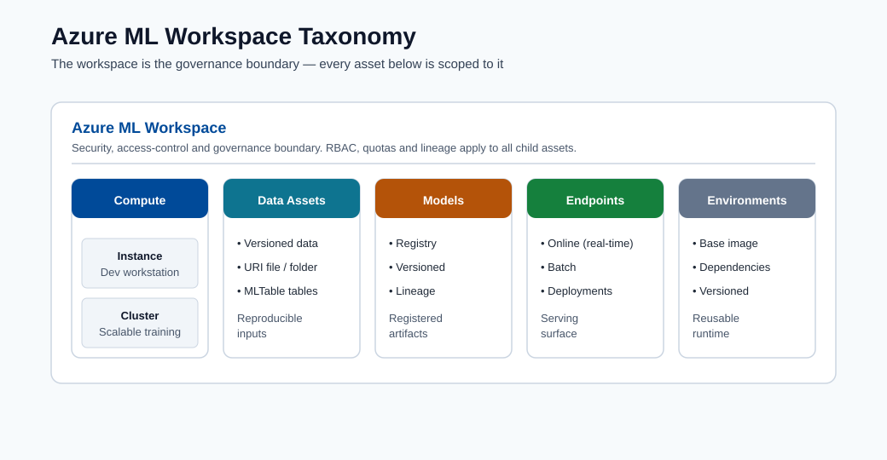
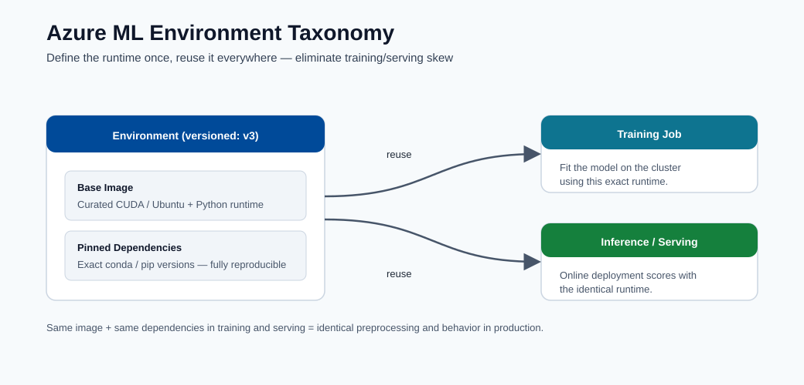
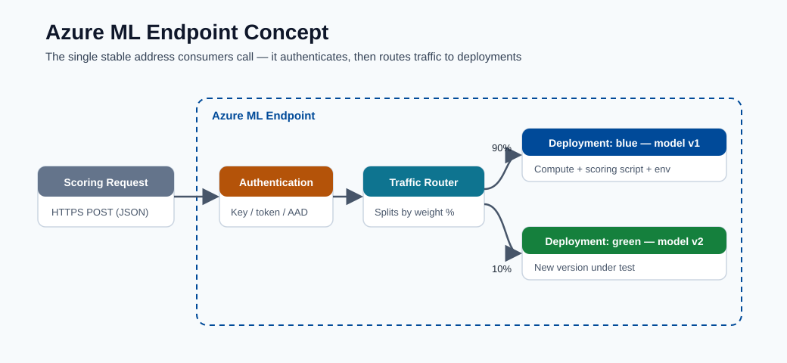

Azure ML Environment¶
This module explains Azure ML platform building blocks and how to choose compute and serving options based on scale, latency, and cost.
Main workspace assets¶
- Workspace
- Compute Instance
- Compute Cluster
- Data assets
- Model registry
- Endpoints
Control plane vs data plane¶
| Plane | Responsibility |
|---|---|
| Control plane | Asset metadata, run history, permissions, governance |
| Data plane | Actual compute execution, model inference, data movement |
Workspace Taxonomy¶

Note - What this shows: The Azure ML workspace taxonomy : how the workspace contains compute, data assets, models, and endpoints under one governance boundary. Use it to see which asset type owns each artifact you will create in later modules.

Note - What this shows: How a versioned environment (base image + pinned dependencies) is reused across both training and inference. Sharing one environment is what prevents training/serving skew : the same code behaving differently in production than in training.
Key concepts:
- Experiment: a tracked training run.
- Registered model: trained artifact stored with version and lineage.
- Endpoint: deployment surface for scoring requests.
Additional key terms:
- Environment: pinned runtime dependencies and base image.
- Datastore: registered storage connection.
- Dataset/Data asset: versioned data reference used by jobs.

Note - What this shows: The anatomy of an Azure ML endpoint: the deployment surface that receives scoring requests, applies authentication, and routes traffic to one or more model versions. This is the object consumers actually call.
Compute guidance¶
- Compute Instance for development
- Compute Cluster for scalable training
- ACI or AKS for serving
Practical split:
- AML Compute Cluster: training, sweeps, AutoML parallel iterations.
- AKS Inference Cluster: production-grade deployment and autoscaling.
Compute decision matrix¶
| Need | Recommended option |
|---|---|
| Notebook exploration and debugging | Compute Instance |
| Parallelized training and HPO | Compute Cluster |
| Quick endpoint prototype | ACI |
| Production, autoscale, high availability | AKS |
Security and governance baseline¶
- Use managed identities for data access.
- Restrict network paths with private endpoints where possible.
- Use least-privilege RBAC.
- Keep lineage from data to model to endpoint for auditability.
Backend execution flow (what happens after submit)¶
sequenceDiagram
participant U as User/SDK/CLI
participant W as Azure ML Workspace
participant C as Compute Cluster
participant S as Storage/Registry
U->>W: Submit job spec (code, env, data refs)
W->>C: Provision/attach compute
W->>C: Resolve environment image
C->>S: Mount/download datasets
C->>C: Execute training command
C->>S: Write logs, metrics, artifacts
W->>W: Record lineage links
W->>U: Return run status and outputsAsset lineage map¶
| Asset | Versioned | Produced by | Consumed by |
|---|---|---|---|
| Data asset | Yes | Data registration job | Training/inference jobs |
| Environment | Yes | Environment build/pin | Training and deployment |
| Model | Yes | Training run output | Online/Batch endpoints |
| Endpoint deployment | Yes (revisioned) | Deploy pipeline | Consumers (apps/APIs) |
Enterprise considerations¶
- Multi-workspace strategy: separate
dev,test,prodwith promotion gates. - Registry strategy: central model registry for cross-workspace sharing.
- Access model: human access via RBAC groups; workload access via managed identity.
- Compliance trail: preserve run IDs, model versions, dataset versions, and deployment revisions.
Azure ML RBAC roles reference¶
| Role | Typical assignee | Permissions |
|---|---|---|
| Owner | Platform team leads | Full control including role assignments |
| Contributor | ML engineers | Create/manage all assets, no role changes |
| AzureML Data Scientist | Data scientists | Run experiments, register models, deploy |
| AzureML Compute Operator | Ops team | Start/stop compute, view runs |
| Reader | Stakeholders | View assets and run history only |
Deep dive: every concept, explained¶
This section explains why each Azure ML building block exists and what problem it solves, not just what it is called.
The workspace as the unit of governance¶
A workspace is the top-level container that ties together compute, data, models, and endpoints under one identity and access boundary. It exists so that everything about a project : who can touch it, which runs produced which model, which data version trained it : is recorded in one auditable place. Behind the scenes a workspace provisions associated Azure resources: a storage account (artifacts, datasets), Key Vault (secrets), Container Registry (environment images), and Application Insights (telemetry). Understanding this mapping explains most permissions and networking issues you will hit later.
Control plane vs data plane : why the split matters¶
- The control plane handles metadata and intent: "register this dataset", "start this job", "who is allowed to deploy". It is lightweight, always-on, and is where governance, lineage, and RBAC live.
- The data plane handles actual work: spinning up VMs, moving gigabytes, running training loops, serving inference. It is where cost and performance are determined.
This separation is why you can submit a job (control plane) and have it queue until compute (data plane) is available, and why permission to see an asset is distinct from permission to run expensive compute with it.
Compute Instance vs Compute Cluster vs inference cluster¶
| Compute | Lifecycle | Why it exists |
|---|---|---|
| Compute Instance | Single, always-on dev VM | Interactive notebooks, debugging, attached to one user identity |
| Compute Cluster | Auto-scales 0→N nodes per job, then back to 0 | Parallel training, hyperparameter sweeps, AutoML trials; you pay only while jobs run |
| AKS / managed inference | Long-lived, autoscaling pods | Low-latency, high-availability serving with health probes |
The key economic idea: training compute should scale to zero when idle (bursty, batch), while serving compute stays warm (steady, latency-sensitive). Choosing the wrong one is a top cause of surprise cloud bills.
Assets, versioning, and lineage¶
Every first-class asset (data, environment, model, endpoint deployment) is versioned. This is not bureaucracy : it is what makes an ML system reproducible and auditable:
- Data asset : a versioned pointer to data in a datastore, so a run records exactly which snapshot it trained on.
- Environment : a pinned runtime (base image + dependency versions). Reusing the same environment for training and inference prevents the "works in training, breaks in production" class of bugs.
- Model : the trained artifact plus metadata linking it back to the run, data, and environment that produced it (its lineage).
- Endpoint deployment : a revisioned serving configuration, so traffic can be split or rolled back between versions.
Lineage is the chain data v → run → model v → endpoint revision. When a production prediction
is questioned (audit, incident, fairness review), lineage lets you reconstruct precisely how it
was produced.
Identity and access concepts¶
- Managed identity : an Azure-managed credential attached to a workload (not a person) so jobs can read data or registries without embedded secrets. This is the secure default.
- RBAC (role-based access control) : permissions granted to identities via roles. The least-privilege principle means giving each identity the minimum role needed (e.g. Contributor for engineers, not Owner), limiting blast radius if credentials are compromised.
- Private endpoint : routes traffic to the workspace over a private network path instead of the public internet, reducing exposure for regulated workloads.
The submit-to-result flow, demystified¶
When you submit a job, the control plane validates the spec, provisions or attaches data-plane compute, resolves the environment image (pulling or building the container), mounts the referenced data version, runs your command, streams logs/metrics/artifacts back to storage, and records lineage. Knowing this sequence is what lets you debug a stuck run: each arrow in the sequence diagram above is a place a job can fail (quota, image build, data mount, code error).
MLOps maturity model¶
MLOps (Machine Learning Operations) is the discipline of applying DevOps principles to machine learning workflows. Microsoft defines a four-level maturity model that describes how organizations evolve from ad-hoc experimentation toward fully automated, self-healing ML systems. Understanding where your team sits today, and what the next level requires, is the starting point for any platform investment decision.
The four levels¶
| Level | Name | Training | Deployment | Monitoring | Retraining |
|---|---|---|---|---|---|
| 0 | Manual | Scripts run on a laptop | Manual copy of model artifact | None | Ad hoc, on request |
| 1 | Automated training pipeline | ML pipeline on compute cluster | Semi-manual or scripted | Basic metrics | Manual trigger |
| 2 | Full CI/CD ML | Pipeline triggered by code commit | Model deployed via release pipeline | Drift detection alerts | Threshold-triggered |
| 3 | Automated retraining | Triggered by data drift or schedule | Blue/green, canary, automated rollback | Full observability stack | Fully autonomous |
Level 0 — Manual¶
At Level 0 a data scientist runs Python scripts locally, stores the model as a pickle file, and emails it to an engineer who deploys it by hand. There is no versioning, no lineage, and no rollback path. The model is effectively a black box attached to tribal knowledge.
Azure ML components that lift you out of Level 0:
- Registering your workspace forces all assets (data, model, endpoint) into a governed store.
- Using mlflow.log_metric and mlflow.log_artifact inside your script turns a local run into
a tracked experiment without changing the training logic.
Level 1 — Automated training pipeline¶
At Level 1 training is a repeatable, parameterised pipeline. Any engineer can re-run the pipeline from the same data and get the same model. Deployment still requires human action.
Azure ML components that enable Level 1:
- Compute Cluster with min_instances=0 so the pipeline runs on-demand and shuts down.
- Azure ML Pipelines (component DAGs) to wire data preparation → training → evaluation →
model registration as discrete, rerunnable steps.
- Registered environments so every step uses an immutable runtime image.
- Data assets with version pinning so the pipeline records exactly which data version it
trained on.
Level 2 — Full CI/CD ML¶
At Level 2 a code commit or data-drift event triggers the entire train-evaluate-deploy pipeline via a CI/CD orchestrator. A gate (automated test or approval) prevents bad models from reaching production.
Azure ML components that enable Level 2:
- GitHub Actions / Azure DevOps integrated with azure/aml-run or CLI v2 az ml job create
actions.
- Model evaluation step in the pipeline that compares new model metrics against the current
champion; the deploy step only proceeds if the challenger wins.
- Managed online endpoints with blue/green traffic splitting so deployment is zero-downtime.
Level 3 — Automated retraining¶
At Level 3 the system monitors its own predictions, detects drift, and automatically kicks off a retraining pipeline without human involvement. Models are continuously current.
Azure ML components that enable Level 3:
- Data drift monitor on the online endpoint that emits an alert or directly triggers a
pipeline via Event Grid.
- Schedule-based pipeline triggers as a simpler baseline for periodic retraining.
- Model promotion registry across dev/test/prod workspaces with automated promotion gates.
Note - Maturity is not a race: Most production ML teams operate effectively at Level 2. Level 3 automation is appropriate when retraining latency is a business-critical KPI (e.g. fraud models where data distribution shifts daily). Choose the level that matches your business cadence, not the one that sounds most impressive.
Azure ML pipelines as first-class assets¶
The component concept¶
A component in Azure ML is a self-contained, reusable unit of computation. It is analogous to a function: it declares typed inputs, typed outputs, and a command to execute. Components are defined in YAML and versioned in the workspace registry, so they can be shared across projects and reused without copy-pasting code.
The key benefit is composability: a pipeline is just a DAG (directed acyclic graph) of component invocations wired together by connecting outputs of one component to inputs of the next. Azure ML handles scheduling, data movement, and lineage recording for you.
YAML component definition example¶
# components/prep_data/component.yml
$schema: https://azuremlschemas.azureedge.net/latest/commandComponent.schema.json
name: prep_data
display_name: Prepare Training Data
version: "1"
type: command
inputs:
raw_data:
type: uri_folder
description: Raw CSV files from the data lake
validation_split:
type: number
default: 0.2
outputs:
train_data:
type: uri_folder
val_data:
type: uri_folder
code: ./src
environment: azureml:fraud-train@latest
command: >-
python prep.py
--raw_data ${{inputs.raw_data}}
--validation_split ${{inputs.validation_split}}
--train_data ${{outputs.train_data}}
--val_data ${{outputs.val_data}}
Note - Input/output types:
uri_folderis a path to a directory (blob container path or local path);uri_fileis a single file. Azure ML resolves these references and mounts or downloads the data before your script runs. Usemlflow_modelas an output type when the step produces a registered model artifact.
Pipeline composition in YAML¶
# pipelines/fraud_pipeline.yml
$schema: https://azuremlschemas.azureedge.net/latest/pipelineJob.schema.json
type: pipeline
display_name: Fraud Detection Training Pipeline
experiment_name: fraud-detection
inputs:
raw_data:
type: uri_folder
path: azureml:fraud-raw-data@latest
jobs:
prep_step:
type: command
component: azureml:prep_data@1
inputs:
raw_data: ${{parent.inputs.raw_data}}
validation_split: 0.2
outputs:
train_data:
mode: rw_mount
val_data:
mode: rw_mount
train_step:
type: command
component: azureml:train_model@1
inputs:
train_data: ${{parent.jobs.prep_step.outputs.train_data}}
val_data: ${{parent.jobs.prep_step.outputs.val_data}}
learning_rate: 0.01
n_estimators: 500
outputs:
model_output:
mode: rw_mount
evaluate_step:
type: command
component: azureml:evaluate_model@1
inputs:
model: ${{parent.jobs.train_step.outputs.model_output}}
val_data: ${{parent.jobs.prep_step.outputs.val_data}}
Submit the pipeline:
az ml job create \
--file pipelines/fraud_pipeline.yml \
--workspace-name my-workspace \
--resource-group my-rg \
--stream
How pipelines enable reproducible workflows¶
Each pipeline run stores: 1. The component version used at each step. 2. The data asset version consumed. 3. The environment version each step ran in. 4. All inputs, outputs, and metrics per step.
This means any historical run can be exactly reproduced by re-submitting with the same component and data versions — no manual reconstruction required. Lineage links from data → component → model → endpoint are recorded automatically.
Difference from Azure Pipelines / DevOps pipelines¶
| Azure ML Pipeline | Azure DevOps / GitHub Actions Pipeline |
|---|---|
| Runs on ML compute (GPU/CPU clusters) | Runs on CI/CD agents (lightweight VMs) |
| Orchestrates data + model steps | Orchestrates code build, test, deploy steps |
| First-class ML lineage and experiment tracking | Source control and artifact management |
| Can be triggered by a DevOps pipeline | Cannot run ML training jobs natively |
The correct architecture is nested: a GitHub Actions workflow (DevOps pipeline) responds to
a code commit and calls az ml job create to submit an Azure ML Pipeline. The DevOps layer
handles CI/CD; the Azure ML layer handles ML execution.
Tip - Reusability: Register frequently-used components (data validation, model evaluation, feature engineering) once in a shared component registry. Teams can pull them by name and version instead of duplicating code, and improvements propagate to all pipelines that reference the latest version.
Feature stores: concept and motivation¶
What is a feature store?¶
A feature store is a centralised repository for storing, serving, and reusing engineered features — the transformed, business-meaningful signals derived from raw data that you feed into ML models. It exists to solve a class of problems that arise when the same feature (e.g. "30-day transaction velocity for customer X") needs to be computed consistently for both training and real-time inference.
Without a feature store, teams typically: - Reimplement the same feature logic in two places (training notebook and production service). - Discover months later that the implementations diverged, producing training/serving skew. - Cannot reuse features across projects, so every new model duplicates data engineering work.
Online store vs offline store¶
| Store | Latency | Contents | Used for |
|---|---|---|---|
| Offline store | Minutes–hours | Historical feature values, columnar format (Parquet) | Model training, batch scoring |
| Online store | Milliseconds | Latest feature values, key-value format (Redis/CosmosDB) | Real-time inference |
The offline store enables you to build training datasets by retrieving historical feature values as they existed at the time of each training label (point-in-time correctness). The online store serves the most recent value at inference time.
The training/serving consistency problem¶
Suppose you train a fraud model with the feature "number of transactions in the last 30 days for this card". Your training code queries a data warehouse and aggregates correctly. Your inference service, written by a different engineer, queries a different table with a slightly different window definition. The feature values differ systematically — and the model's performance in production degrades in ways that are very hard to diagnose.
A feature store enforces one canonical implementation of each feature transformation. The same pipeline that writes features to the offline store also writes them to the online store, guaranteeing both are derived from identical logic.
Point-in-time correctness¶
When building a training dataset you must not "look into the future". If label \(y_i\) was assigned at time \(t_i\), the feature vector \(\mathbf{x}_i\) must contain only information available at \(t_i\). A naive join on entity ID without time filtering causes label leakage, producing training metrics far better than production performance.
Feature stores solve this with time-travel queries:
The store returns the feature value as it was stored at (or before) \(t_i\), not the current value.
How it connects to Azure ML¶
Azure ML integrates with Microsoft Fabric Feature Store and the Azure ML managed feature store (preview). You can: - Define feature sets as Python transformation code registered in the feature store. - Generate training datasets by joining feature sets with a label table using point-in-time joins via the Azure ML SDK. - Serve features at inference time from the online store behind a managed online endpoint.
# Retrieve historical features for training (SDK v2 preview)
from azureml.featurestore import FeatureStoreClient, get_offline_features
from azure.identity import DefaultAzureCredential
fs_client = FeatureStoreClient(
credential=DefaultAzureCredential(),
subscription_id="<sub>",
resource_group_name="<rg>",
name="my-feature-store",
)
feature_set = fs_client.feature_sets.get("transactions", "1")
obs_df = spark.read.parquet("abfss://labels@datalake.dfs.core.windows.net/labels.parquet")
training_df = get_offline_features(
features=[feature_set.get_feature("tx_velocity_30d")],
observation_data=obs_df,
timestamp_column="event_time",
)
Note - Maturity: The Azure ML managed feature store reached general availability in 2024. For simpler projects, a well-designed feature engineering pipeline (with strict versioning and identical logic in training and inference) provides most of the benefits before you commit to a full feature store adoption.
Distributed training concepts in Azure ML¶
Why distributed training?¶
For large models or large datasets, a single GPU becomes the bottleneck. Distributed training spreads computation across multiple GPUs (or multiple nodes of GPUs). The two fundamental strategies are data parallelism and model parallelism.
Data parallelism¶
In data parallelism each GPU holds a complete copy of the model but processes a different mini-batch of data. After each forward and backward pass, the gradients are synchronised (averaged) across all GPUs before the weight update.
where \(B\) is the per-GPU batch size and \(N_{\text{GPU}}\) is the number of GPUs. Larger effective batch size means fewer gradient synchronisation rounds per epoch, but may require learning-rate scaling (linear scaling rule: \(\eta' = \eta \times N_{\text{GPU}}\)).
PyTorch Distributed Data Parallel (DDP) is the standard implementation:
# train.py (DDP entry point — called by Azure ML on each rank)
import os
import torch
import torch.distributed as dist
from torch.nn.parallel import DistributedDataParallel as DDP
def setup():
dist.init_process_group(backend="nccl") # NCCL = GPU-to-GPU via NVLink/InfiniBand
torch.cuda.set_device(int(os.environ["LOCAL_RANK"]))
def main():
setup()
model = MyModel().cuda()
model = DDP(model, device_ids=[int(os.environ["LOCAL_RANK"])])
# ... training loop unchanged from single-GPU code
Model parallelism¶
In model parallelism the model is too large to fit on a single GPU, so different layers are placed on different GPUs. Data flows sequentially through the pipeline of devices. This requires more careful engineering (pipeline parallelism, tensor parallelism) and is typically used for LLM pre-training (e.g. GPT-style models with billions of parameters).
| Strategy | Use when | Framework support |
|---|---|---|
| Data parallelism (DDP) | Model fits on one GPU; need faster training | PyTorch DDP, Horovod |
| Model parallelism | Model does NOT fit on one GPU | DeepSpeed, Megatron-LM |
| Pipeline parallelism | Very deep models; balance layer latency | DeepSpeed, FairScale |
| Tensor parallelism | Very wide layers (large attention heads) | Megatron-LM, NeMo |
Parameter server architecture¶
An older alternative to DDP is the parameter server model: some nodes act as servers storing the global parameter state, while worker nodes compute gradients and push them to the servers. This is less favoured for GPU training today (all-reduce is more bandwidth-efficient) but is still used in distributed CPU training and some sparse embedding workloads.
Configuring a distributed training job in Azure ML¶
# jobs/distributed_train.yml
$schema: https://azuremlschemas.azureedge.net/latest/commandJob.schema.json
type: command
display_name: DDP Training Job
code: ./src
command: >-
python train.py
--epochs 50
--batch_size 64
environment: azureml:pytorch-gpu-env@latest
compute: azureml:gpu-cluster
distribution:
type: pytorch # Azure ML injects MASTER_ADDR, MASTER_PORT, RANK, WORLD_SIZE
process_count_per_instance: 4 # GPUs per node
resources:
instance_count: 2 # 2 nodes × 4 GPUs = 8-way DDP
experiment_name: distributed-training
Azure ML sets the MASTER_ADDR, MASTER_PORT, RANK, LOCAL_RANK, and WORLD_SIZE
environment variables automatically, so your script calls dist.init_process_group() without
hard-coded addresses.
GPU cluster setup¶
# Create a GPU compute cluster (Standard_NC6s_v3 = 1x V100)
az ml compute create \
--name gpu-cluster \
--type AmlCompute \
--min-instances 0 \
--max-instances 8 \
--size Standard_NC24s_v3 \ # 4x V100 per node
--workspace-name my-workspace \
--resource-group my-rg
Tip - Spot VMs for distributed training: GPU spot (low-priority) VMs cost ~60–80% less than dedicated. For fault-tolerant training jobs (with checkpointing), always use
--tier LowPriority. Azure ML automatically requeuess the job if the VM is evicted.
Networking and private deployment¶
Why network isolation matters¶
In regulated industries (banking, healthcare, government), data must never traverse the public internet. Even with TLS encryption, traffic that touches a public IP creates an audit finding. Azure ML's private networking features allow you to deploy a workspace and all associated resources entirely within a private address space.
Virtual network (VNet) injection¶
When you VNet-inject an Azure ML workspace, the associated resources (storage, key vault, container registry, Application Insights) all receive private endpoints — network interfaces within your VNet with private IP addresses. Traffic between compute and storage stays entirely within the Azure backbone, never leaving your VNet.
# Create a VNet-injected workspace
az ml workspace create \
--name secure-workspace \
--resource-group my-rg \
--location eastus \
--managed-network allow_only_approved_outbound
Private endpoint for the workspace¶
A private endpoint for the workspace itself means the Azure ML Studio UI and all SDK/CLI calls route through a private IP in your VNet. External access requires either: - A jumpbox VM inside the VNet, or - Azure Bastion for browser-based access, or - A VPN / ExpressRoute connecting your corporate network to the VNet.
Private DNS zones¶
When a private endpoint is created, the workspace FQDN (e.g.
my-workspace.api.azureml.ms) must resolve to the private IP, not the public one. This requires:
1. A private DNS zone (privatelink.api.azureml.ms) linked to the VNet.
2. An A record mapping the workspace hostname to the private endpoint IP.
Azure can create these automatically during workspace provisioning (--public-network-access
disabled) or you can manage them manually for complex hub-spoke topologies.
Outbound rules (managed VNet)¶
Azure ML's managed VNet feature (generally available 2024) handles egress without you managing NSGs and route tables. You declare allowed outbound destinations:
# workspace_managed_vnet.yml
managed_network:
isolation_mode: allow_only_approved_outbound
outbound_rules:
- name: allow-pypi
type: fqdn
destination: pypi.org
- name: allow-conda-forge
type: fqdn
destination: conda.anaconda.org
- name: allow-storage
type: private_endpoint
destination:
service_resource_id: /subscriptions/<sub>/resourceGroups/<rg>/providers/Microsoft.Storage/storageAccounts/mydatalake
subresource_type: blob
Summary: why financial and healthcare orgs require this¶
| Requirement | Azure ML feature |
|---|---|
| Data never leaves private network | VNet injection + private endpoints |
| No public IP on workspace | --public-network-access disabled |
| Audit trail of network paths | NSG flow logs + Azure Monitor |
| Encryption in transit | TLS 1.2+ enforced on all private endpoints |
| Encryption at rest | Storage + KV with customer-managed keys (CMK) |
Note - Planning: Private networking must be planned before workspace creation. Retrofitting private endpoints onto an existing public workspace is possible but requires re-deploying associated resources. Design the network topology upfront to avoid downtime.
Cost optimization patterns¶
Azure ML costs fall into two buckets: compute (VMs running training or inference) and storage + egress (data, artifacts, logs). Compute is almost always the dominant cost.
Spot VMs for training¶
Spot (low-priority) VMs use spare Azure capacity at 60–80% discount. They can be evicted with 2 minutes notice. For ML training, the mitigation is checkpointing:
# Save checkpoint every N epochs
if epoch % checkpoint_every == 0:
torch.save({
"epoch": epoch,
"model_state": model.state_dict(),
"optimizer_state": optimizer.state_dict(),
}, f"outputs/checkpoint_epoch_{epoch}.pt")
Azure ML automatically requeues the job on eviction; the job resumes from the last checkpoint.
az ml compute create \
--name spot-cluster \
--type AmlCompute \
--size Standard_NC6s_v3 \
--min-instances 0 \
--max-instances 4 \
--tier LowPriority # <-- spot pricing
Auto-shutdown for compute instances¶
A compute instance left running overnight costs ~$50–200/day depending on VM size. Set an auto-shutdown schedule:
az ml compute update \
--name my-instance \
--workspace-name my-workspace \
--resource-group my-rg \
--idle-time-before-shutdown-minutes 30
Compute cluster min=0¶
Cluster nodes are billed per minute. Setting min-instances=0 means the cluster scales to zero
when idle. The trade-off is a cold-start delay of ~3–5 minutes to provision the first node.
For development clusters this is almost always the right trade-off.
ACI vs AKS cost¶
| Serving option | Billing model | Best for | Avoid when |
|---|---|---|---|
| ACI | Per-second CPU+memory | Prototype, <5 RPS | High throughput, GPU inference |
| Managed Online Endpoint | Per-minute VM uptime | Production REST API | Batch scoring |
| Serverless Online Endpoint | Per-token / per-request (models) | Sporadic LLM traffic | Consistent high throughput |
| Batch Endpoint + Cluster | Per-minute compute only while scoring | Large offline batch jobs | Real-time SLA required |
Reserved instances for inference¶
If a production inference endpoint runs 24/7, a 1-year reserved instance reduces the VM cost by approximately 40%. A 3-year reservation reduces it by ~60%.
Real cost calculation example¶
Suppose you run a monthly retraining pipeline on a Standard_NC6s_v3 spot VM (1× V100, ~$0.90/h
spot price) and serve a model on a Standard_DS3_v2 (4 vCPU, 14 GB, ~$0.20/h on-demand):
| Item | Duration | Spot/On-demand | Monthly cost |
|---|---|---|---|
| Prep + training pipeline | 4 h/month | Spot $0.90/h | $3.60 |
| Evaluation + registration | 0.5 h/month | Spot $0.90/h | $0.45 |
| Online endpoint (inference) | 730 h/month | On-demand $0.20/h | $146 |
| Storage (50 GB artifacts) | 730 h/month | $0.018/GB/month | $0.90 |
| Total | ~$151/month |
The inference VM is 97% of the cost. This is typical and explains why right-sizing the inference
VM SKU and using autoscale (scale to 0 with scale_settings.scale_down_as_needed) matters far
more than optimising training compute.
Tip - Cost alerts: Create an Azure Budget alert at 80% of your expected monthly spend so you are notified before costs spiral. Set a second alert at 100%. Training jobs that get stuck in an infinite loop on a non-spot cluster are a common cause of surprise bills.
Azure ML and DevOps: the MLOps CI/CD pipeline¶
Architecture overview¶
A production MLOps pipeline combines two orchestrators: 1. GitHub Actions (or Azure DevOps) — responds to source control events (code push, PR merge, scheduled trigger) and orchestrates the overall release workflow. 2. Azure ML Pipelines — runs the ML-specific work (data prep, training, evaluation) on ML compute with full lineage tracking.
flowchart TD
A[Developer pushes code] --> B[GitHub Actions: CI workflow]
B --> C{Lint and unit tests pass?}
C -- No --> D[Fail — notify developer]
C -- Yes --> E[az ml job create — submit training pipeline]
E --> F[Azure ML: data prep → train → evaluate]
F --> G{New model beats champion?}
G -- No --> H[Register as challenger only — no deploy]
G -- Yes --> I[GitHub Actions: CD workflow]
I --> J[Deploy to staging endpoint]
J --> K[Integration tests against staging]
K --> L{Tests pass?}
L -- No --> M[Roll back — alert on-call]
L -- Yes --> N[Promote to production endpoint — shift traffic]GitHub Actions integration¶
# .github/workflows/train-and-deploy.yml
name: Train and Deploy Fraud Model
on:
push:
branches: [main]
paths:
- "src/**"
- "pipelines/**"
- "components/**"
env:
AZURE_SUBSCRIPTION: ${{ secrets.AZURE_SUBSCRIPTION_ID }}
AZURE_RESOURCE_GROUP: my-rg
AML_WORKSPACE: my-workspace
jobs:
train:
runs-on: ubuntu-latest
steps:
- uses: actions/checkout@v4
- name: Azure login
uses: azure/login@v2
with:
creds: ${{ secrets.AZURE_CREDENTIALS }}
- name: Install Azure ML CLI extension
run: az extension add --name ml --yes
- name: Submit training pipeline
id: train_job
run: |
JOB_NAME=$(az ml job create \
--file pipelines/fraud_pipeline.yml \
--workspace-name $AML_WORKSPACE \
--resource-group $AZURE_RESOURCE_GROUP \
--query name -o tsv)
echo "job_name=$JOB_NAME" >> $GITHUB_OUTPUT
az ml job stream --name $JOB_NAME \
--workspace-name $AML_WORKSPACE \
--resource-group $AZURE_RESOURCE_GROUP
- name: Check job outcome
run: |
STATUS=$(az ml job show \
--name ${{ steps.train_job.outputs.job_name }} \
--workspace-name $AML_WORKSPACE \
--resource-group $AZURE_RESOURCE_GROUP \
--query status -o tsv)
if [ "$STATUS" != "Completed" ]; then
echo "Training job failed with status: $STATUS"
exit 1
fi
deploy-staging:
needs: train
runs-on: ubuntu-latest
environment: staging
steps:
- uses: actions/checkout@v4
- name: Azure login
uses: azure/login@v2
with:
creds: ${{ secrets.AZURE_CREDENTIALS }}
- name: Deploy to staging endpoint
run: |
az ml online-deployment create \
--file deployments/staging_deployment.yml \
--workspace-name $AML_WORKSPACE \
--resource-group $AZURE_RESOURCE_GROUP \
--all-traffic
- name: Run integration tests
run: python tests/integration/test_endpoint.py --env staging
deploy-production:
needs: deploy-staging
runs-on: ubuntu-latest
environment: production # requires manual approval in GitHub Environments
steps:
- uses: actions/checkout@v4
- name: Azure login
uses: azure/login@v2
with:
creds: ${{ secrets.AZURE_CREDENTIALS }}
- name: Shift 100% traffic to new deployment
run: |
az ml online-endpoint update \
--name fraud-endpoint \
--traffic "new-deployment=100" \
--workspace-name $AML_WORKSPACE \
--resource-group $AZURE_RESOURCE_GROUP
Model training triggered by code change¶
The paths filter on the workflow ensures that only relevant changes trigger training.
Changes to documentation or unrelated configuration files do not burn GPU budget. The paths
filter checks for changes in src/, pipelines/, and components/ — the three directories
that affect model behaviour.
Promotion gates¶
In the GitHub Actions example, the production environment is configured in GitHub repository
settings to require a reviewer approval before the job runs. This creates a manual gate
between staging validation and production deployment. For fully automated Level 3 MLOps, this
gate can be replaced by an automated test suite that checks:
- Prediction latency \(\leq\) SLA threshold (e.g. \(p99 \leq 100\text{ ms}\)).
- Model accuracy \(\geq\) champion accuracy on a held-out evaluation set.
- No data drift detected on the new model's shadow predictions.
Model testing in the pipeline¶
The evaluation component in the Azure ML pipeline should produce a JSON file with metrics that the GitHub Actions workflow reads to make the promotion decision:
# evaluate.py — runs inside Azure ML pipeline
import json, mlflow
from sklearn.metrics import roc_auc_score
# ... load model and validation data ...
auc = roc_auc_score(y_val, model.predict_proba(X_val)[:, 1])
mlflow.log_metric("val_auc", auc)
# Write a machine-readable result for the CI gate
result = {"val_auc": auc, "promoted": auc >= CHAMPION_AUC_THRESHOLD}
with open("outputs/eval_result.json", "w") as f:
json.dump(result, f)
The GitHub Actions step downloads this artifact and fails the pipeline if promoted is False,
preventing the deployment job from running.
Tip - Secrets in Actions: Never hard-code subscription IDs or connection strings in YAML files. Use GitHub Encrypted Secrets (
${{ secrets.NAME }}) for credentials and${{ vars.NAME }}for non-sensitive configuration. TheAZURE_CREDENTIALSsecret is a service principal JSON created withaz ad sp create-for-rbac --role Contributor --scopes /subscriptions/<sub>and stored as a repository secret.
Environment versioning strategy¶
Azure ML environments are immutable once published. Recommended versioning approach:
- Pin all packages with exact versions in
conda.ymlorrequirements.txt. - Use environment name + version (e.g.,
fraud-train:3) as the reference in jobs. - Rebuild the environment when any dependency changes, never mutate existing versions.
- Reuse the same environment for training and inference to guarantee compatibility.
# Example conda.yml
name: fraud-train
channels:
- defaults
dependencies:
- python=3.10
- pip:
- scikit-learn==1.3.0
- azureml-sdk==1.55.0
- pandas==2.0.3
- lightgbm==4.0.0
Cost management tips¶
| Practice | Saves |
|---|---|
| Set compute cluster min nodes = 0 | Avoids idle compute charges |
| Use spot/low-priority VMs for training | 60-80% compute cost reduction |
| Set auto-shutdown on compute instances | Prevents overnight idle spend |
| Use ACI for low-QPS endpoints instead of AKS | Eliminates cluster overhead |
Choosing compute: a decision flow¶
Picking compute is mostly a function of two questions: is the work interactive or batch, and is it latency-sensitive or throughput-oriented. This flow captures the common path.
flowchart TD
A[What are you doing?] --> B{Interactive dev<br/>or a job?}
B -->|Interactive| C[Compute Instance<br/>auto-shutdown on]
B -->|Job| D{Training/HPO<br/>or serving?}
D -->|Training or sweep| E[Compute Cluster<br/>min nodes = 0, spot VMs]
D -->|Serving| F{Steady high QPS<br/>or low/spiky QPS?}
F -->|High QPS, low latency| G[Managed online / AKS<br/>autoscale, health probes]
F -->|Low or spiky QPS| H[ACI or managed endpoint<br/>scale-to-low]Common environment and compute pitfalls¶
These are the issues that most often block a first Azure ML deployment. Recognizing the symptom saves hours of debugging.
| Symptom | Likely cause | Fix |
|---|---|---|
| Job stuck in "Queued" for a long time | Cluster at max nodes or quota exhausted | Raise quota, increase max nodes, or use a smaller VM SKU |
| "Image build failed" before training starts | Unpinned or conflicting dependencies in the environment | Pin exact versions; build and test the environment image once, then reuse it |
| Model works in a notebook but fails at the endpoint | Training/serving environment skew | Reuse the same registered environment for training and inference |
| Endpoint returns 401/403 | Missing key or token, or RBAC too restrictive | Use the endpoint key/token; grant the caller the right role |
| Surprise monthly bill | Compute instance left running, or AKS over-provisioned | Enable auto-shutdown; set cluster min nodes to 0; right-size serving |
Tip - Reproducibility checklist: Before you call a result "done", confirm three versions are pinned and recorded: the data version, the environment version, and the code commit. With those three, any run on this workspace can be reproduced exactly, which is the whole point of the asset model.
Quick self-check¶
| # | Question | Answer |
|---|---|---|
| 1 | What is the difference between the control plane and the data plane, and which one determines cost? | The control plane handles asset metadata, run history, permissions, and governance; the data plane performs the actual compute execution, inference, and data movement. The data plane (compute) determines cost. |
| 2 | Why should a training compute cluster scale to zero but a serving cluster stay warm? | Training is bursty/batch, so scaling to zero when idle avoids paying for unused compute; serving must stay warm to meet low-latency requirements and avoid cold-start delays. |
| 3 | What three versioned things must be recorded to reproduce a training run? | The data version, the environment version, and the code commit. |
| 4 | Why does reusing one environment for training and inference prevent a whole class of bugs? | Identical pinned library versions at train and serve time eliminate train/serve skew caused by version mismatches. |